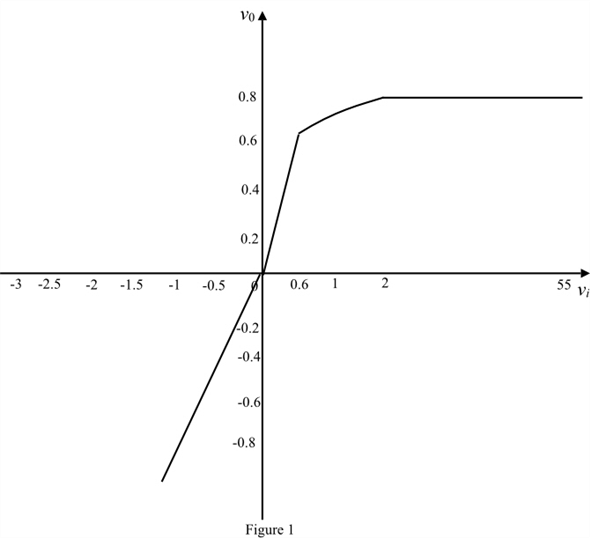

Apply Kirchhoff’s voltage law to the circuit.
Substitute for.
Determine the value of input voltage for .

Determine the value of input voltage for .
Determine the value of input voltage for .
Determine the value of input voltage for .
Refer to Figure P4.89 in the text book.
Write the expression of current through the diode.
The voltage drop of diode is 0.7 V and its current is 1 mA.
…… (1)
…… (2)
Divide equation (1) by equation (2).
Apply Kirchhoff’s voltage law to the circuit.
Substitute for.
Determine the value of input voltage for .
Determine the value of input voltage for .
Determine the value of input voltage for .
Determine the value of input voltage for .
For the negative output voltage the current direction is negative.
Apply Kirchhoff’s voltage law.
Substitute for  .
.
Determine the value of input voltage for .
Determine the value of input voltage for .
Determine the value of input voltage for .
Draw the transfer charactestics of the circuit as shown in Figure 1.

Thus, the transfer characteristic is drawn.